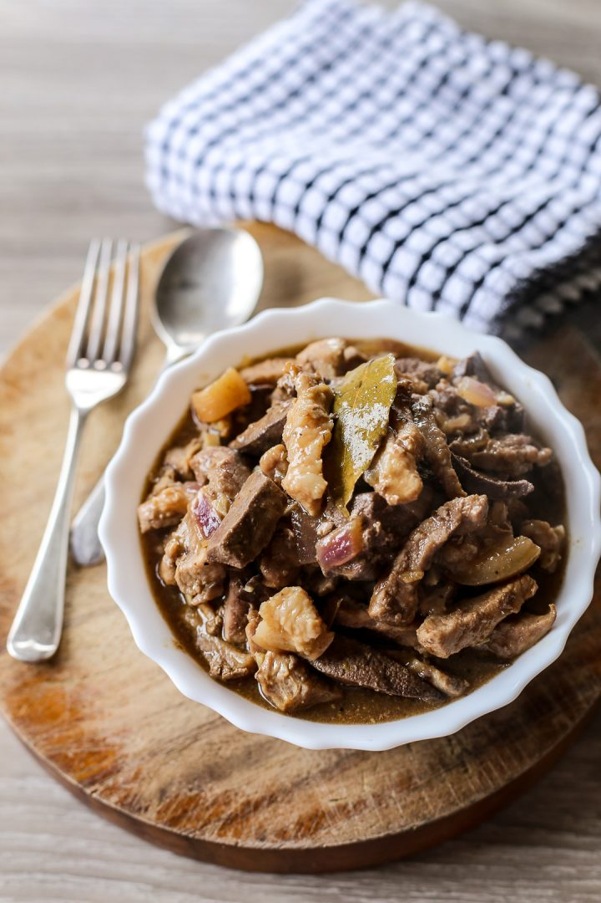

Rigadillo (Pork and Liver Stew)
Home

Higadillo is a FIlipino dish of pork and liver slowly simmered on vinegar, lechon sauce and soy sauce with lots of garlic giving a sweet, sour and savoury flavour.
Ingredients:
- Pork kasim, 3/4 kls, sliced
- Pork liver, 1/4 kls, sliced
- Garlic
- Onion
- Soy sauce, 3 tbsp
- Vinegar, 1/4 cup
- Water, 3 cups
- Bay leaves, 3 pcs
- Pepper, 1/2 tbsp
- Sugar, 1/4 cup
- Sarsa, 1/2 cup
Step-by-Step Process
- In a pot heat oil then brown pork slices. Remove pork slices from the pot the set aside.
Using the same pot sauté garlic, ginger and onion.
- Add the pork liver then stir fry for 2 minutes.
- Add the pork back, place the bay leaves on top then pour the soy sauce, lechon sauce and water, bring it to a boil then simmer for 30 minutes in low heat adding water if needed.
- Pour the vinegar and sugar simmer for 10 more minutes or until pork is tender.
- Season with salt and freshly ground black pepper then serve.